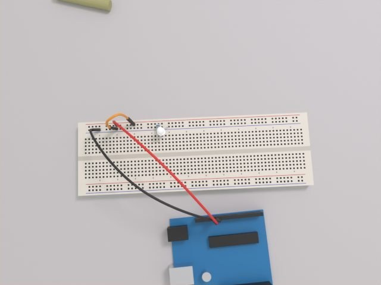

مراس: منصة تدريب بالكاميرا على توصيل الدوائر الإلكترونية
منصة ويب ترشد المتدرب بالصوت خطوة بخطوة وهو يوصّل لوحة التجارب بالأردوينو، وتتابع القطع الحقيقية بكاميرا الآيباد أو الجوال، وتمنع توصيل الكهرباء قبل أن ينجح الفحص.
النطاق الحالي مهارة واحدة: تغذية لوحة التجارب من الأردوينو لإضاءة لمبة LED بمقاومة، مع التحقق من القطبية والقصر الكهربائي. لا تحتاج أي جهاز إضافي ولا تثبيت.
المشكلة والحل
المشكلة
في معامل الميكاترونكس يوصّل المتدربون الدوائر بأيديهم، والمدرب لا يستطيع متابعة الجميع في الوقت نفسه. فتمرّ أخطاء مثل عكس القطبية أو القصر الكهربائي دون اكتشاف، فتتلف القطع أو يترسّخ الخطأ.
الحل
يضع المتدرب الجهاز فوق اللوحة. تتعرّف المنصة على اللوحة وفتحاتها، ترشده صوتياً، وتفحص موضع السلكين قبل التشغيل. ما لا تراه الكاميرا يؤكّده المدرب بحسابه، ويُسجَّل ذلك باسمه ووقته.
ما الذي يميّزها
أدوات المحاكاة مثل Tinkercad وWokwi تعمل على الشاشة فقط. مراس تتابع القطع الحقيقية في يد المتدرب، بالعربية وبالصوت، وتعطي المدرب لوحة متابعة.

تجربة مباشرة
ثلاث طرق للتجربة الآن، من هذه الصفحة مباشرة:
1. الكاميرا على القطع الحقيقية
وجّه الكاميرا إلى اللوحة كاملة. تظهر النقاط فوق الفتحات تلقائياً ثم تبدأ الخطوات.
فتح المدرب المباشر3. حسابات العرض
حساب متدرب وحساب مدرب جاهزان للمعرض. كلمتا المرور على بطاقة العرض الورقية عند صاحبة المشروع، وليستا مكتوبتين في أي صفحة.
تسجيل الدخولحدود الأمان: حساب المتدرب لا يرى إلا نتائجه، وتأكيد المدرب يتحقق منه الخادم لا المتصفح، ولا توجد كلمات مرور أو مفاتيح سرية في ملفات الواجهة.
النتائج المثبتة
كل رقم هنا خرج من اختبار نُفّذ فعلاً، وتاريخه 14 و15 نوفمبر 2026. لا أرقام تقديرية.
حالة توصيل فُحصت كلها
بوابة ما قبل التشغيل جُرّبت على كل تركيبة ممكنة من نتائج الفحص، ولم تسمح بالتشغيل إلا في الحالات الصحيحة.
| الاختبار الآلي | النتيجة | ماذا يثبت |
|---|---|---|
| منطق المدرب المباشر | 50 من 50 | أحكام الخطوات: قطبية معكوسة، قصر، قطعة ناقصة |
| بوابة ما قبل التشغيل | 66 من 66 | لا تشغيل عند الشك، ولا تأكيد ذاتي من المتدرب |
| محرك الدائرة في المحاكاة | 31 من 31 | الحكم على الدائرة بالتوصيل الكهربائي لا بلون السلك |
| قاعدة البيانات والصلاحيات | 60 من 60 | المتدرب لا يقرأ بيانات غيره، وتأكيد المدرب يُرفض من غير المدرب |
ما لم يثبت بعد
- لم تُسجَّل بعدُ جلسة كاملة ناجحة على القطع الحقيقية من البداية إلى إضاءة اللمبة. المرحلة الحالية: نموذج أولي قيد الاختبار.
- التعرّف على القطع الصغيرة (اللمبة والمقاومة) ما زال جزئياً. عند الشك تقول المنصة «لم أتمكن من التعرف عليها» ولا تخمّن، ويبقى التشغيل ممنوعاً حتى يؤكّد المدرب.
- المنصة لا تقطع الكهرباء آلياً. الفحص إرشاد على الشاشة، والكيبل يوصّله شخص.
- لم تُجرَّب بعدُ مع متدربين في معمل، فلا نتائج تعليمية نعرضها.
- التعرّف التلقائي على فتحات اللوحة لم يُثبت بعدُ باختبار يمكن إعادته. إن لم يتعرّف، يحدد المستخدم الزوايا الأربع باللمس.
نموذج الأعمال
| العميل الذي يدفع | أقسام الميكاترونكس والإلكترونيات في الكليات التقنية. المستخدمون: المتدربون والمدربون داخل القسم. |
|---|---|
| القيمة | للمتدرب: إرشاد عربي بالصوت على القطع الحقيقية وتنبيه قبل التشغيل. للمدرب: من يحتاج مساعدة وما الخطأ الأكثر تكراراً. للمؤسسة: لا أجهزة جديدة، آيباد أو جوال ورابط ويب. |
| الإيرادات | اشتراك سنوي للقسم أو المعمل (ترخيص مؤسسي)، وإعداد مهارات مخصصة حسب طلب الجهة. السعر لم يُحدَّد بعد، ويُحدَّد بعد التجربة في معمل. |
| القنوات | تجربة مجانية في معمل واحد، وعرض حي في المعرض، ثم عرض النتائج على أقسام أخرى. |
| التكاليف | حالياً شبه معدومة: استضافة مجانية ومكتبات مفتوحة المصدر. عند التوسع: استضافة وقاعدة بيانات مدفوعة، وقطع وحوامل للاختبار، ووقت التطوير والدعم. |
| الشركاء | المؤسسة العامة للتدريب التقني والمهني ومركز البحث والابتكار بالكلية، ومدربو الميكاترونكس، وبرنامج الدعم Rimal X. |
قبل أي بيع: يُحسم ترخيص مكتبة نموذج التعرّف (AGPL-3.0)، بترخيص تجاري أو ببديل.